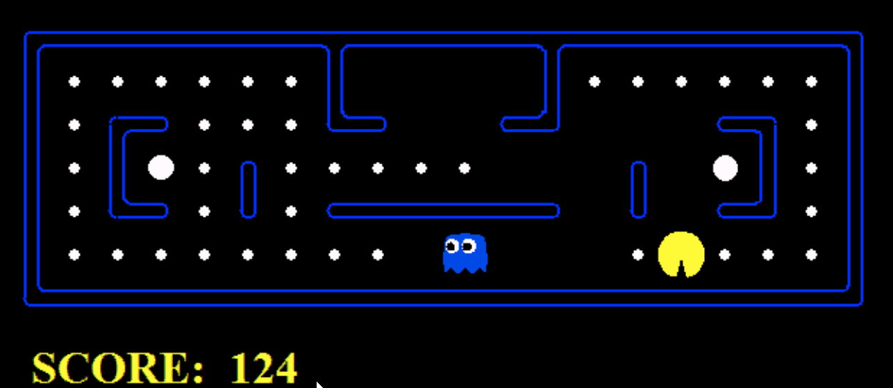

Pacman: Multiple Agents
CS188 AI
Made for project 2 in CS188 Spring 2014. Built using: Python
Goal
The goal of this project was to have Pacman make "rational" decisions when there is are adversaries that are out to kill him (ghosts). Optimality was decided based on Pacman's model of the world. For example, if Pacman assumed that he was always playing against an evil mastermind- a minimax agent- then he should choose to also play as a minimax agent. However, if the ghost is just randomly moving around, minimax is a poor choice since he would be excessively scared and always choose to hide instead of taking risks and going for food. Expectimax is a better choice, in this case. In these examples, Pacman does not know whether the ghosts are random or not. Decision making models used are: minimax with alpha beta pruning, expectimax, and greedy evaluation functions.
The left shows Pacman running minimax with alpha beta pruning against two ghosts that are also running minimax. Note how they cooperate to trap and kill Pacman without any explicit code that tells them to cooperate. The right shows a custom evaluation function that weights all the features I deemed important: ghost distance, food distance, etc. Check out them moves!
Example Runs

